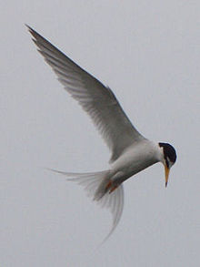
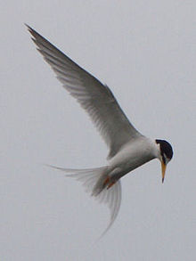

| Little Tern | |
|---|---|
|  | |
| Adult S. a. sinensis in breeding plumage, Japan | |
| Conservation status | |
| Binomial name | |
| Sternula albifrons Pallas, 1764 |
|
| Synonyms | |
|
Sterna albifrons |
| Little Tern | |
|---|---|
|  | |
| Adult S. a. sinensis in breeding plumage, Japan | |
| Conservation status | |
| Binomial name | |
| Sternula albifrons Pallas, 1764 |
|
| Synonyms | |
|
Sterna albifrons |
The Little Tern, Sternula albifrons or Sterna albifrons, is a seabird of the tern family Sternidae. It was formerly placed into the genus Sterna, which now is restricted to the large white terns (Bridge et al., 2005). The former North American (S. a. antillarum) and Red Sea S. a. saundersi subspecies are now considered to be separate species, the Least Tern (Sternula antillarum) and Saunders's Tern (Sternula saundersi).
This bird breeds on the coasts and inland waterways of temperate and tropical Europe and Asia. It is strongly migratory, wintering in the subtropical and tropical oceans as far south as South Africa and Australia.
There are three subspecies, the nominate albifrons occurring in Europe to North Africa and western Asia; guineae of western and central Africa; and sinensis of East Asia and the north and east coasts of Australia (Higgins and Davies, 1996).
The Little Tern breeds in colonies on gravel or shingle coasts and islands. It lays two to four eggs on the ground. Like all white terns, it is defensive of its nest and young and will attack intruders.
Like most other white terns, the Little Tern feeds by plunge-diving for fish, usually from saline environments. The offering of fish by the male to the female is part of the courtship display.
This is a small tern, 21–25 cm long with a 41–47 cm wingspan. It is not likely to be confused with other species, apart from Fairy Tern and Saunders's Tern, because of its size and white forehead in breeding plumage. Its thin sharp bill is yellow with a black tip and its legs are also yellow. In winter, the forehead is more extensively white, the bill is black and the legs duller. The call is a loud and distinctive creaking noise.

{kind=link}
{kind=link}